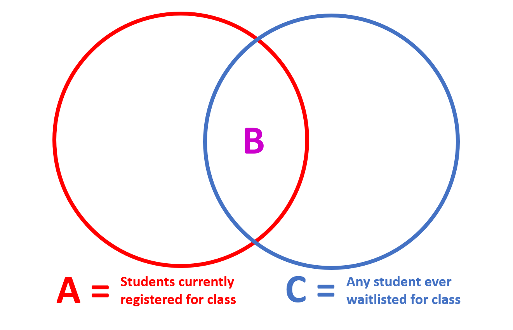

Welcome to class!
On Wednesday. In the meantime…
Math 108 Definition:
“A function is a rule that assigns the input value(s) to a single output value.”
function(){ block immediately following function()return().count_threes <- function(a_number_vector){
is_three <- a_number_vector == 3
sum(is_three)
}count_threes <- function(a_number_vector){
is_three <- a_number_vector == 3
return(sum(is_three))
}Answer:
One of the best ways to improve your reach as a data scientist is to write functions. Functions allow you to automate common tasks in a more powerful and general way than copy-and-pasting.
Answer:
When you’ve copied and pasted a block of code more than twice.
Writing good functions is a lifetime journey.
Figure out what this function does, and think of a better name for it.
f1 <- function(string, prefix) {
substr(string, 1, nchar(prefix)) == prefix
}f2 <- function(x) {
if (length(x) <= 1) return(NULL)
x[-length(x)]
}Write a function that:
Write a function that:
Hint: Check the “conditional statements” section in the reading.
Write a function that:
Chapter 19: Functions
It’s easier to start with working code and turn it into a function; it’s harder to create a function and then try to make it work.

class_data_all <- read_csv("https://byuistats.github.io/M335/data/waitlist_DP_108.csv")Make sure you understand the goal before you start coding the solution!